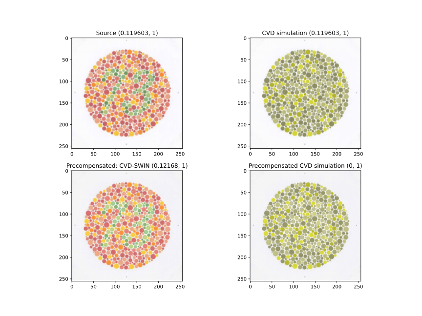
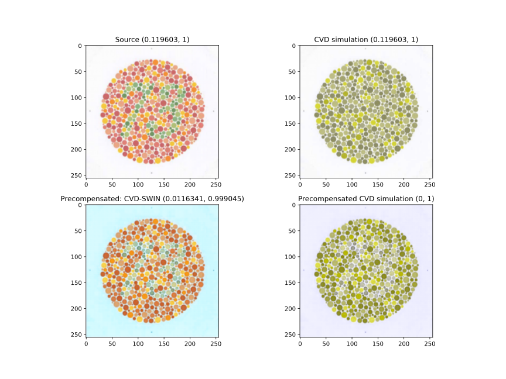

olimp.precompensation.nn.models.cvd_swin.cvd_swin_1channel
- class olimp.precompensation.nn.models.cvd_swin.cvd_swin_1channel.CVDSwin1Channel(img_size=256, patch_size=4, in_chans=3, num_classes=1000, embed_dim=96, depths=[8, 4, 4], num_heads=[8, 8, 8], window_size=8, mlp_ratio=4.0, qkv_bias=True, qk_scale=None, drop_rate=0.0, attn_drop_rate=0.0, drop_path_rate=0, norm_layer=<class 'torch.nn.modules.normalization.LayerNorm'>, ape=True, patch_norm=True, use_checkpoint=False, **kwargs)[source]
Swin Transformer
- Parameters:
img_size (int | tuple[int, …]) – Input image size. Default 224
patch_size (int | tuple[int, …]) – Patch size. Default: 4
in_chans (int) – Number of input image channels. Default: 3
num_classes (int) – Number of classes for classification head. Default: 1000
embed_dim (int) – Patch embedding dimension. Default: 96
depths (tuple[int, …]) – Depth of each Swin Transformer layer.
num_heads (tuple[int, …]) – Number of attention heads in different layers.
window_size (int) – Window size. Default: 7
mlp_ratio (float) – Ratio of mlp hidden dim to embedding dim. Default: 4
qkv_bias (bool) – If True, add a learnable bias to query, key, value. Default: True
qk_scale (float) – Override default qk scale of head_dim ** -0.5 if set. Default: None
drop_rate (float) – Dropout rate. Default: 0
attn_drop_rate (float) – Attention dropout rate. Default: 0
drop_path_rate (float) – Stochastic depth rate. Default: 0.1
norm_layer (nn.Module) – Normalization layer. Default: nn.LayerNorm.
ape (bool) – If True, add absolute position embedding to the patch embedding. Default: False
patch_norm (bool) – If True, add normalization after patch embedding. Default: True
use_checkpoint (bool) – Whether to use checkpointing to save memory. Default: False
olimp.precompensation.nn.models.cvd_swin.cvd_swin_3channels
- class olimp.precompensation.nn.models.cvd_swin.cvd_swin_3channels.CVDSwin3Channels(img_size=256, patch_size=4, in_chans=3, num_classes=1000, embed_dim=96, depths=[8, 4, 4], num_heads=[8, 8, 8], window_size=8, mlp_ratio=4.0, qkv_bias=True, qk_scale=None, drop_rate=0.0, attn_drop_rate=0.0, drop_path_rate=0, norm_layer=<class 'torch.nn.modules.normalization.LayerNorm'>, ape=True, patch_norm=True, use_checkpoint=False, **kwargs)[source]
Swin Transformer
- Parameters:
img_size (int | tuple(int)) – Input image size. Default 224
patch_size (int | tuple(int)) – Patch size. Default: 4
in_chans (int) – Number of input image channels. Default: 3
num_classes (int) – Number of classes for classification head. Default: 1000
embed_dim (int) – Patch embedding dimension. Default: 96
depths (tuple(int)) – Depth of each Swin Transformer layer.
num_heads (tuple(int)) – Number of attention heads in different layers.
window_size (int) – Window size. Default: 7
mlp_ratio (float) – Ratio of mlp hidden dim to embedding dim. Default: 4
qkv_bias (bool) – If True, add a learnable bias to query, key, value. Default: True
qk_scale (float) – Override default qk scale of head_dim ** -0.5 if set. Default: None
drop_rate (float) – Dropout rate. Default: 0
attn_drop_rate (float) – Attention dropout rate. Default: 0
drop_path_rate (float) – Stochastic depth rate. Default: 0.1
norm_layer (nn.Module) – Normalization layer. Default: nn.LayerNorm.
ape (bool) – If True, add absolute position embedding to the patch embedding. Default: False
patch_norm (bool) – If True, add normalization after patch embedding. Default: True
use_checkpoint (bool) – Whether to use checkpointing to save memory. Default: False